Joint Editor¶
このガジェットはジョイントを作成、編集するための便利機能を提供します。
Create new joint¶
ジョイントの作成するための便利機能です。
{kind=link}
{kind=link}
{kind=link}
{kind=link}
{kind=link}
{kind=link}
{kind=link}
{kind=link}
{kind=link}
Arrange radius between start to end joint¶
ジョイントチェーンのサイズを調整するための機能です。
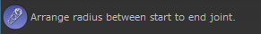{kind=link}
ジョイントを2つ選択してからボタンをクリックします。
最初に選択したジョイントと最後に選択したジョイントの間のジョイントチェーンの大きさを変更します。最初に選択したジョイントの大きさから最後に選択したジョイントの多きさ滑らかになるように、間の各ジョイントチェーンの大きさを変更します。
最後に選択したジョイントは最初に選択したジョイントの子である必要があります。
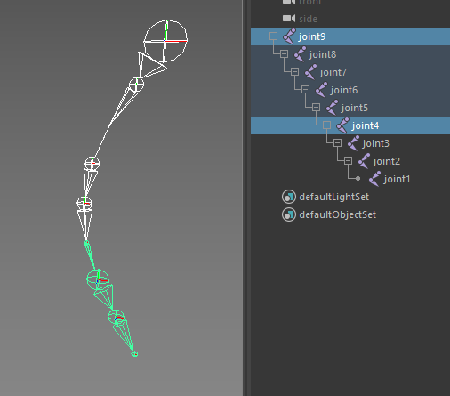 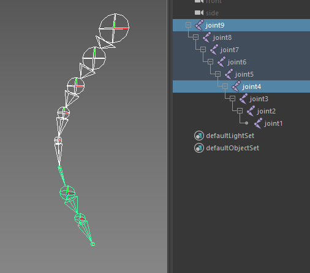{kind=link}
{kind=link}
複数のジョイントチェーンを選択してCtrlを押しながらクリックすると、各ジョイントから末端のジョイントにかけてジョイントチェーンの大きさをまとめて変更します。
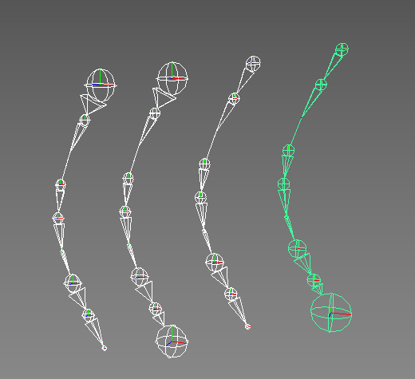 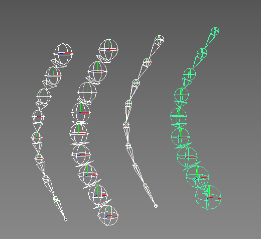{kind=link}
{kind=link}
Parent Tools¶
ジョイントチェーンを作成する上で便利な機能を提供するツール群です。
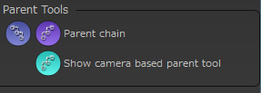{kind=link}
{kind=link}
{kind=link}
{kind=link}
Camera based parent tool¶
このツールは複数のジョイントを任意の流れに沿ってペアレントし、ジョイントチェーンを作成する機能です。
予めペアレント化したいジョイントを選択してから、このボタンをクリックしてツールを起動します。
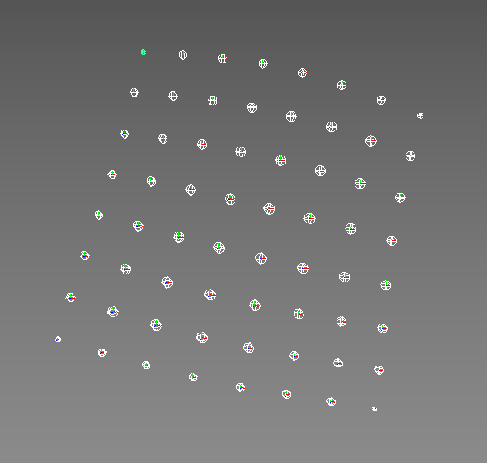{kind=link}
ツールを起動すると画面が少しだけ暗くなるので、作成したいジョイントチェーンの方向にドラッグします。
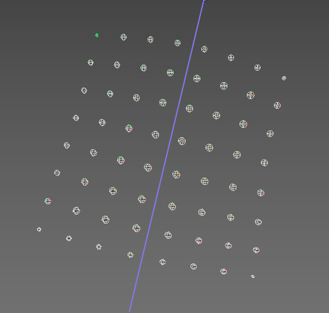{kind=link}
成功すると、ドラッグした方向にジョイントがペアレントされてチェーンが生成されます。
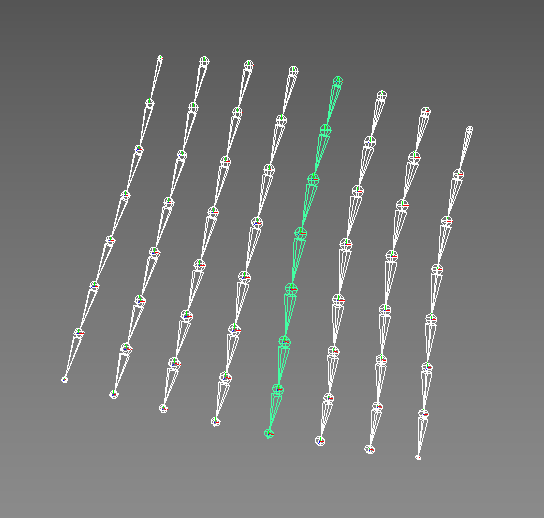{kind=link}
注釈
この機能を正しく機能させるためには、できるだけジョイントは規則正しく並んでいる方が望ましいです。
また、ジョイントの末端の位置が不揃いだと、最良の結果を得られない可能性が高くなります。
Joint Splitter¶
既存のジョイントを分割するための機能を提供するツール群です。
このツールを使用する場合、分割したいジョイントの子を選択してから使用します。
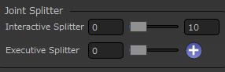{kind=link}
Interactive Splitter¶
{kind=link}
{kind=link}
{kind=link}
Executive Splitter¶
Interactive Splitterとは逆に、設定に基づいた数にジョイントを分割します。何度も同じ数だけ分割する場合に便利です。
分割を実行するには分割したいジョイントの子を選択し、スライダ右の＋ボタンをクリックします。
Joint Axis Editor¶
ジョイントの軸の向きを調整する機能を提供するツールです。Maya標準のOrient Joint機能を拡張したような機能になっています。
この機能は選択したジョイントの軸の向きを調整するための機能です。
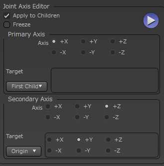{kind=link}
Apply to Children¶
このチェックがOnの場合、選択ジョイントの子階層にも適用します。
Freeze¶
軸調整後、フリーズをかけます。このためApplyToChildrenがOffでも子階層のRotate値は0になります。
Primary Axis¶
このセクションでは選択したジョイントを最優先でどの方向に向けるかを設定します。
基本的な動きとしてはTargetで指定した方向に、Axisで設定した軸を向けます。
Axis¶
どの軸をターゲットの方向へ向けるかを設定します。
Target¶
Axisの向ける対象を設定します。
First Child |
操作対象ジョイントの子のうち、Outliner上で一番上にあるノードを対象にします。 |
Origin |
このオプションで指定した、操作前の軸にAxisを対象にします。 |
Vector |
このオプションで指定したワールド空間での軸に対象にします。 |
Node |
このフィールドに設定したTransformノードを対象にします。 |
Secondary Axis¶
このセクションでは選択したジョイントをPrimaryの方に向けつつ、もう一つの軸をどの方向に向けるかを設定します。
基本的な動きとしてはTargetで指定した方向に、Axisで設定した軸を向けます。
Axis¶
どの軸をターゲットの方向へ向けるかを設定します。Primary Axisは必ずそのターゲットの方に向くのに対し、こちらの軸はその姿勢を維持しながらできるだけ指定されたターゲットの方に向けます。
Target¶
Axisの向ける対象を設定します。
Origin |
このオプションで指定した、操作前の軸にAxisを対象にします。 |
Vector |
このオプションで指定したワールド空間での軸に対象にします。 |
Node |
このフィールドに設定したTransformノードを対象にします。 |
Surface |
このフィールドにポリゴンかNurbsの法線方向を対象にします。 |
{kind=link}
{kind=link}
Mirror Joints¶
ジョイントをミラーリングします。
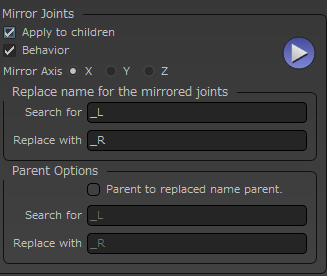{kind=link}
この機能はMaya標準のMirror Jointとほぼ同等の機能を持っていますが、このツールでは標準機能と違い複数のジョイントを選択して、まとめてミラーリングする事ができます。
Apply to chilren¶
この設定がOnの場合、子ジョイントもまとめてミラーリングします。
Behavior¶
Behaviorでミラーリングします。
Mirror Axis¶
ミラーリングする軸を指定します。
Replace name for the mirrored joints¶
元のジョイントの名前から"Search for"の文字列を検索し、ミラーされたジョイントには"Replace with"の文字列に置き換えてリネームします。
Parent Options¶
ミラーリングされたジョイントの親を指定する事ができます。Parent to replaced name parentがOnの状態にすると、ミラーリング元のジョイントの親ノードの名前から"Search for"の文字列を検索し、"Replace with"で置き換えたノードの子にミラーリングされたジョイントを配置します。
置き換えた名前のノードがない場合はこの処理をスキップします。
Finisher¶
ジョイントの仕上げ作業に使用する機能をまとめたツール群です。
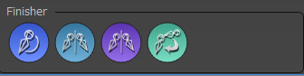{kind=link}
Fix orientation¶
選択したジョイントと、その一番したの階層までのジョイントに対して軸補正を行います。
軸補正とは
子階層に向けてX軸（または-X軸）を向ける
それ意外の軸は極力維持
を行ないます。
Mirror to opposite side¶
選択したジョイントの反対側のジョイントに対してミラーリングを適用します。反対側とは命名規則に則ったジョイント名である事を前提に、位置を表す文字列がLの場合R、Rの場合Lに対して適用します。
既存のジョイントに対してミラーリングをかけたい場合に便利です。
Mirror from firset selection to second selection¶
"Mirro to opposite side"は自動的に反対側のジョイントを探してきますが、こちらはn番目のジョイントの位置をn+1番目ののジョイントにミラーリングして適用します。
Connect inverse scale¶
選択したジョイントの親ノードのscaleを、選択ジョイントのinverseSacleに接続します。